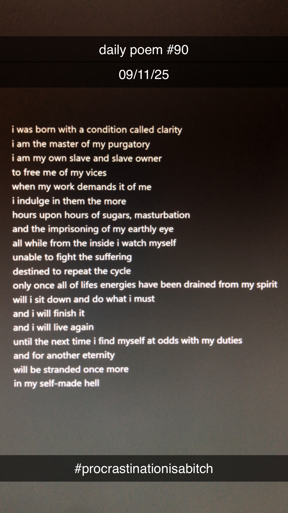

I was born with a condition called clarity
[90]I was born with a condition called clarity.
I am the master of my purgatory.
I am my own slave and slave owner.
To free me of my vices
When my work demands it of me
I indulge in them the more.
Hours upon hours of sugars, masturbation
And the imprisoning of my earthly eye.
All while from the inside I watch myself,
Unable to fight the suffering,
Destined to repeat the cycle.
Only once all of life's energies have been drained from my spirit
Will I sit down and do what I must.
And I will finish it.
And I will live again.
Until the next time I find myself at odds with my duties
And for another eternity
Will be stranded once more
In my self-made hell.
